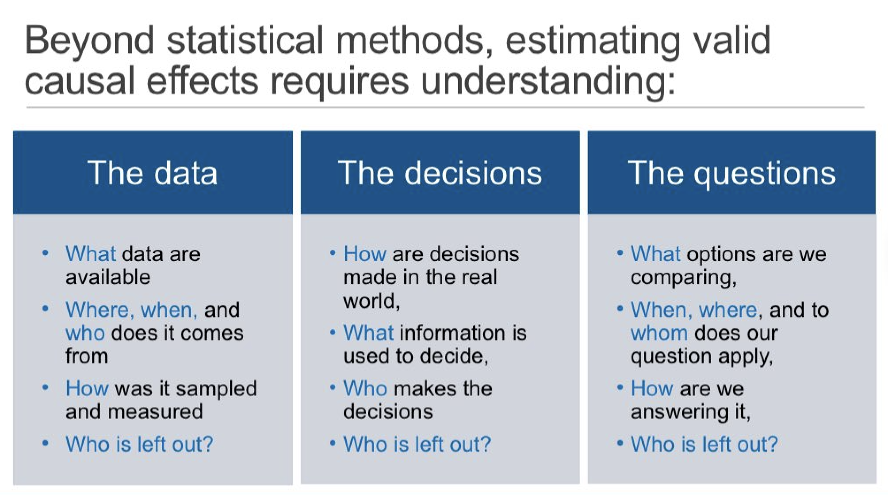

3 Concetti chiave
Prerequisiti
- Leggere Horoscopes. L’ultimo capitolo di McElreath (2020) discute il contesto scientifico e culturale della statistica.
- Leggere The Effect: An Introduction to Research Design and Causality. Focalizzati sul capitolo 10 Treatment Effects.
Concetti e competenze chiave
- Definizione di popolazione e campione.
- Distinzione tra variabili indipendenti e dipendenti.
- La matrice dei dati.
- L’effetto delle variabili all’interno dell’analisi statistica.
- I concetti di stima e inferenza.
- Il concetto di modello psicologico.
Preparazione del Notebook
Introduzione
Most of the fundamental ideas of science are essentially simple, and may, as a rule, be expressed in a language comprehensible to everyone.
(Einstein A and Infeld L, 1938)
Questo capitolo introduce il contesto e i principi base dell’analisi dei dati, con un focus su come le tecniche statistiche, combinate con una solida teoria dei fenomeni, siano strumentali all’avanzamento delle conoscenze scientifiche.
Il termine “statistica” può assumere diversi significati, a seconda del contesto in cui viene utilizzato.
- Nel primo senso, la statistica è una scienza e una disciplina che si occupa dello studio e dell’applicazione di metodi e tecniche per la raccolta, l’organizzazione, l’analisi, l’interpretazione e la presentazione di dati.
- Nel secondo senso, il termine “statistica” si riferisce a una singola misura o un valore numerico che è stato calcolato a partire da un campione di dati. Questo tipo di statistica rappresenta una caratteristica specifica del campione. Esempi comuni di statistiche in questo senso includono la media campionaria, la deviazione standard campionaria o il coefficiente di correlazione campionario.
L’analisi dei dati consente di sintetizzare grandi quantità di informazioni e di verificare le previsioni avanzate dalle teorie. Tuttavia, senza una teoria che dia significato ai dati, le osservazioni rimangono mere descrizioni prive di un contesto esplicativo. È attraverso l’integrazione tra dati e teoria che si raggiunge una comprensione profonda dei fenomeni e si favorisce l’avanzamento scientifico.
3.1 La Spiegazione Scientifica
La scienza non si limita a descrivere o prevedere i fenomeni; essa mira a spiegare il perché degli eventi, fornendo una comprensione delle cause e dei meccanismi che governano il mondo. La spiegazione scientifica è quindi uno strumento essenziale per costruire teorie che non solo descrivono e prevedono, ma anche chiariscono le dinamiche causali e le connessioni tra fenomeni, aiutando così a sviluppare un controllo informato sugli stessi.
Se prendiamo l’esempio del successo accademico in psicologia dell’educazione, possiamo osservare che i dati rivelano una forte associazione tra il livello di istruzione dei genitori e il successo scolastico dei figli. Tuttavia, una semplice previsione basata su questa associazione – “provenendo da una famiglia con basso livello d’istruzione, è improbabile che tu ottenga un titolo universitario” – non risponde alle domande fondamentali per migliorare il sistema educativo: perché esiste questa disparità? Quali interventi potrebbero ridurre questa disuguaglianza?
Per andare oltre la previsione, la scienza deve individuare i fattori causali che contribuiscono al fenomeno, esplorare il modo in cui agire su questi fattori potrebbe alterare l’outcome, e stimare le incertezze e le dinamiche temporali di questi effetti. Ad esempio, per ridurre la disuguaglianza educativa, è necessario comprendere se e come aumentare il sostegno finanziario agli studenti possa realmente facilitare il percorso scolastico di chi proviene da contesti meno favoriti, e prevedere gli effetti di lungo termine di tali politiche. Questo approccio permette non solo di prevedere ma anche di controllare e migliorare i fenomeni studiati.
3.1.1 Elementi Fondamentali della Spiegazione Scientifica
La filosofia della scienza ha individuato tre elementi chiave di una spiegazione scientifica:
- Explanandum: il fenomeno da spiegare. Ad esempio, “si è verificata una crisi petrolifera nel 1973.”
- Explanans: un insieme di affermazioni che spiegano il fenomeno. Per esempio, “gli stati membri dell’OAPEC hanno imposto un embargo sul petrolio in risposta al sostegno degli Stati Uniti a Israele nella guerra del Kippur.”
- Legame esplicativo: i principi o le leggi che descrivono il meccanismo sottostante, ossia il modo in cui l’explanans causa l’explanandum. Nel caso dell’embargo, il legame potrebbe essere: “gli stati dell’OAPEC usarono il petrolio come strumento politico per influenzare la politica estera degli Stati Uniti.”
I modelli scientifici incorporano questi elementi, rappresentando una metodologia per ottenere spiegazioni scientifiche. Essi includono il fenomeno da spiegare, i fattori causali rilevanti e i meccanismi che collegano i fattori all’esito. A differenza dei modelli puramente descrittivi o predittivi, i modelli scientifici in psicologia sono progettati per rispondere a domande causali, facilitando la comprensione e il controllo dei fenomeni.
3.2 Modelli Psicologici
Un modello è una rappresentazione matematica semplificata di un fenomeno reale. È composto da un insieme di equazioni e ipotesi che definiscono la struttura probabilistica e le relazioni tra le variabili, cercando di cogliere gli aspetti essenziali del fenomeno senza includerne ogni dettaglio. Esistono spesso diversi modelli applicabili a uno stesso problema, e il compito della scienza dei dati è identificare quello che meglio si adatta ai dati, soddisfacendo criteri di validità e accuratezza.
I modelli psicologici sono strumenti concettuali per descrivere, spiegare e prevedere il comportamento umano e i processi mentali. Un buon modello psicologico dovrebbe avere alcune caratteristiche fondamentali:
Coerenza descrittiva: Il modello deve rappresentare in modo logico e coerente il fenomeno studiato, catturando gli aspetti chiave del processo psicologico e organizzando le osservazioni in una struttura comprensibile.
Capacità predittiva: Un modello efficace deve essere in grado di fare previsioni accurate sui futuri sviluppi del fenomeno. Questa capacità non solo ne aumenta l’utilità, ma permette anche di testarne la validità.
Supporto empirico: Le ipotesi e le previsioni del modello devono essere confermate da dati raccolti attraverso ricerche sistematiche e rigorose.
Falsificabilità: Un modello scientifico deve poter essere testato e, se necessario, confutato con l’osservazione e l’esperimento. Questo principio assicura che il modello rimanga aperto alla revisione e al miglioramento in base a nuove evidenze.
Parsimonia: Il modello dovrebbe spiegare il fenomeno nel modo più semplice possibile, evitando complessità inutili.
Generalizzabilità: Deve essere applicabile a una vasta gamma di situazioni e contesti, non limitandosi a casi specifici o condizioni sperimentali particolari.
Utilità pratica: Un modello efficace dovrebbe fornire spunti utili per interventi, terapie o applicazioni nel mondo reale.
La modellazione in psicologia affronta sfide uniche dovute alla natura soggettiva e variabile dell’esperienza umana. I ricercatori devono bilanciare la precisione scientifica con la flessibilità necessaria per cogliere la complessità dei fenomeni psicologici, considerando al contempo i limiti etici della sperimentazione e le potenziali implicazioni sociali dei loro modelli.
L’analisi dei dati, attraverso tecniche statistiche, è il mezzo per valutare un modello psicologico. Oltre a stabilire se il modello riesce a spiegare i dati osservati, l’analisi verifica la capacità del modello di fare previsioni su dati non ancora raccolti. In questo modo, la modellazione non solo consente di comprendere i fenomeni psicologici ma permette anche di prevedere e, in certi casi, influenzare il comportamento e i processi mentali.
3.2.1 Rappresentare i Fenomeni per Ragionare e Comunicare
La spiegazione scientifica, oltre a chiarire i meccanismi causali, serve anche a fornire un linguaggio per ragionare sui fenomeni e per condividere la conoscenza. In psicologia, la costruzione di modelli scientifici permette di rappresentare i fenomeni attraverso variabili, funzioni e parametri, fornendo un vocabolario per descrivere componenti, dipendenze e proprietà dei fenomeni. Un modello semplice e chiaro consente di emulare il comportamento del fenomeno senza necessità di simulazioni complesse, facilitando la comunicazione e l’intuizione.
Un aspetto importante della spiegazione scientifica è la possibilità di utilizzare i modelli per stimolare l’intuizione e generare nuove domande. La comprensione dei fenomeni attraverso una rappresentazione scientifica accessibile permette di formulare ipotesi, collegare concetti, e trasferire conoscenze da un campo all’altro.
In sintesi, la spiegazione scientifica va oltre la mera previsione: mira a fornire una comprensione completa dei fenomeni, basata su nessi causali e su un linguaggio formale per ragionare e comunicare. I modelli scientifici non solo predicono eventi, ma spiegano come e perché questi eventi si verificano, offrendo una struttura con cui intervenire e influenzare i fenomeni stessi.
Nell’analisi dei dati bayesiana, questa attenzione alle cause e agli effetti trova un’applicazione naturale. La possibilità di aggiornare le proprie credenze alla luce di nuove informazioni consente di costruire modelli che non si limitano alla descrizione o alla previsione, ma che forniscono spiegazioni coerenti e profonde dei fenomeni, aiutando a sviluppare teorie sempre più raffinate e applicabili.
3.3 Ruolo dell’Analisi dei Dati
L’analisi dei dati riveste un ruolo centrale nelle scienze, specialmente in psicologia, per due ragioni principali:
Riassumere grandi quantità di informazioni: consente di sintetizzare dati complessi in statistiche descrittive, grafici e altre rappresentazioni che rendono i dati accessibili e comprensibili. Questo processo evidenzia tendenze generali, variazioni e anomalie, facilitando l’identificazione di schemi comportamentali e differenze tra gruppi.
Verificare le predizioni di un modello scientifico: permette di confrontare le aspettative teoriche con i dati osservati, valutando la validità delle ipotesi sottostanti. Questa verifica contribuisce direttamente all’avanzamento della conoscenza scientifica, sostenendo, modificando o confutando una teoria.
Sebbene l’analisi dei dati possa portare alla scoperta di correlazioni o schemi interessanti, questi risultati, senza una teoria, offrono solo una comprensione limitata. Per esempio, rilevare che due variabili psicologiche sono correlate non fornisce informazioni sulla natura di questa relazione o sul motivo per cui esiste. Per interpretare e attribuire un significato a queste osservazioni, è necessario un quadro teorico che le contestualizzi e proponga meccanismi causali o esplicativi.
3.3.1 Carattere Multidisciplinare dell’Analisi dei Dati
L’analisi dei dati si situa all’intersezione di tre discipline principali: statistica, teoria della probabilità e informatica. Ciascuna contribuisce con strumenti e approcci specifici essenziali per comprendere i dati, estrarre conoscenza e generare nuove ipotesi scientifiche.
Statistica: offre tecniche per raccogliere, analizzare e interpretare i dati, fornendo strumenti descrittivi e inferenziali utili per trarre conclusioni e prendere decisioni.
Teoria della probabilità: fornisce la base matematica della statistica, consentendo di modellare e quantificare l’incertezza e di comprendere i fenomeni aleatori che caratterizzano molte osservazioni in psicologia.
Informatica: supporta l’analisi attraverso strumenti per la gestione, l’elaborazione e la visualizzazione di grandi quantità di dati. La programmazione consente di sviluppare modelli avanzati e gestire dataset complessi.
Questa natura multidisciplinare riflette la complessità dell’analisi dei dati e la necessità di integrare diverse competenze per affrontare le sfide scientifiche contemporanee.
3.4 Concetti Chiave nell’Analisi dei Dati
Per condurre un’analisi dei dati efficace, è fondamentale comprendere alcuni concetti chiave.
3.4.1 Popolazioni e Campioni
In ogni analisi dei dati, è fondamentale identificare la popolazione di interesse, l’insieme completo di entità o individui che rappresentano il fenomeno studiato. In psicologia, ad esempio, si può voler studiare il benessere in una popolazione generale o in una sotto-popolazione specifica, come gli individui che hanno subito un evento stressante.
Per ottenere informazioni dettagliate su una popolazione, si utilizzano campioni: sottoinsiemi rappresentativi dai quali si possono fare inferenze sull’intera popolazione. La rappresentatività del campione è cruciale, poiché un campione non rappresentativo può portare a conclusioni errate e limitare la generalizzabilità dei risultati.
3.4.2 Bias nella Raccolta Dati
I bias nella raccolta e interpretazione dei dati possono influenzare profondamente i risultati di uno studio. Capire chi ha raccolto i dati, come e con quali finalità, è fondamentale per garantire una corretta interpretazione. I dati non sono mai neutri e le intenzioni che ne guidano la raccolta spesso ne influenzano l’interpretazione (Murray & Carr, 2024; Nobles, 2000)

3.4.3 Variabili e Costanti
Nell’analisi statistica, le variabili rappresentano le caratteristiche osservate che possono assumere diversi valori (numerici o categorici). Al contrario, le costanti sono valori che rimangono fissi in un dato contesto. Si distinguono poi le variabili indipendenti (o predittive), che influenzano le variabili dipendenti, e le variabili dipendenti, che rappresentano gli esiti di interesse.
3.4.4 Effetti
In statistica, un effetto misura il cambiamento osservato nelle variabili dipendenti in relazione alle variabili indipendenti. Ad esempio, l’efficacia di una terapia può essere valutata misurando la differenza nei sintomi prima e dopo il trattamento (Huntington-Klein, 2021).
3.4.5 Stima e Inferenza
3.4.5.1 Stima
La stima statistica consente di ottenere informazioni su una popolazione a partire da un campione. Si utilizzano statistiche campionarie (come la media campionaria) per stimare i parametri della popolazione (come la media vera della popolazione).
Gli stimatori devono possedere proprietà come:
- consistenza: la stima converge al vero valore del parametro all’aumentare della dimensione del campione;
- non distorsione: il valore atteso dello stimatore è uguale al vero valore del parametro;
- efficienza: lo stimatore ha la minor varianza possibile.
L’accuratezza della stima dipende da vari fattori, tra cui la dimensione e la rappresentatività del campione, la variabilità nella popolazione e il metodo di campionamento utilizzato.
3.4.6 Inferenza Statistica
Dopo aver ottenuto le stime, l’inferenza statistica permette di trarre conclusioni più generali sulla popolazione. Essa consente di valutare ipotesi specifiche o rispondere a domande di ricerca basate sui dati raccolti.
Ad esempio, se abbiamo stimato la media del rendimento accademico in un campione di studenti, l’inferenza statistica ci consente di quantificare l’incertezza riguardo alla differenza di rendimento tra maschi e femmine all’interno della popolazione più ampia. In questo modo, l’inferenza statistica ci fornisce gli strumenti per fare previsioni e trarre conclusioni su fenomeni che riguardano l’intera popolazione.
Esistono due approcci principali.
L’inferenza bayesiana:
- Si basa sul teorema di Bayes;
- Utilizza probabilità a priori, che riflettono conoscenze o credenze iniziali su un fenomeno;
- Aggiorna queste probabilità con nuovi dati per ottenere probabilità a posteriori;
- Fornisce una interpretazione delle probabilità come gradi di credenza soggettivi.
L’approccio frequentista:
- Si fonda sulla frequenza relativa di eventi osservati in esperimenti ripetuti;
- Utilizza strumenti come il test di ipotesi nulla e gli intervalli di confidenza per trarre conclusioni;
- Non fa uso di probabilità a priori, concentrandosi esclusivamente sui dati osservati.
3.5 Le Sfide dell’Inferenza Statistica in Psicologia
Secondo Gelman et al. (2020), l’inferenza statistica in psicologia affronta tre sfide principali:
Generalizzare dai campioni alla popolazione: Questa sfida è strettamente legata al problema del campionamento di comodo, spesso usato in psicologia, ma presente in quasi tutte le applicazioni dell’inferenza statistica. La difficoltà risiede nel trarre conclusioni affidabili su una popolazione più ampia partendo da un campione limitato e, a volte, non rappresentativo.
Generalizzare dal gruppo trattato al gruppo di controllo: Questa sfida riguarda l’inferenza causale, un aspetto centrale per determinare l’efficacia dei trattamenti psicologici. L’obiettivo è stabilire se i risultati osservati nel gruppo trattato possano essere applicati al gruppo di controllo o ad altre popolazioni, permettendo una valutazione valida dell’effetto del trattamento.
Generalizzare dalle misurazioni osservate ai costrutti sottostanti: In psicologia, i dati raccolti non corrispondono mai perfettamente ai costrutti teorici di interesse. La sfida è inferire questi costrutti latenti dai dati osservati, che rappresentano spesso solo un’approssimazione imperfetta.
Queste sfide evidenziano la complessità dell’inferenza in psicologia e la necessità di metodologie robuste per affrontarle.
3.6 Riflessioni Conclusive
In psicologia, le teorie forniscono ipotesi testabili che spiegano il “come” e il “perché” di determinati fenomeni mentali e comportamentali. Una teoria robusta permette di formulare previsioni chiare e specifiche, che possono essere verificate empiricamente attraverso l’analisi dei dati. Ad esempio, una teoria sull’ansia potrebbe prevedere che, in un compito di esposizione graduale a stimoli ansiogeni, il livello di ansia diminuisca progressivamente. Senza una teoria che spieghi perché questo dovrebbe accadere, tale osservazione rimane solo un dato descrittivo, privo di valore esplicativo o predittivo.
L’analisi dei dati diventa davvero potente quando è integrata a una teoria. Senza teoria, i dati possono descrivere fenomeni ma non spiegare i meccanismi sottostanti. La teoria fornisce il contesto interpretativo, orientando la raccolta e l’analisi dei dati, e permettendo una comprensione profonda dei fenomeni psicologici.
Un esempio è l’uso della data science per analizzare l’efficacia di un trattamento psicoterapeutico. I dati possono mostrarci una diminuzione dei sintomi in seguito alla terapia, ma è solo la teoria alla base del trattamento che fornisce un quadro interpretativo per questo miglioramento, proponendo i meccanismi per cui il trattamento riduce i sintomi. La teoria orienta quindi l’analisi e permette di interpretare i dati in un contesto scientifico.
Sviluppare una teoria in psicologia è complesso a causa della notevole variabilità umana. Un buon modello psicologico deve prevedere con precisione i comportamenti osservabili e rappresentare i processi mentali latenti. Queste previsioni devono essere testabili e falsificabili (Eronen & Bringmann, 2021).
La relazione tra teoria e analisi dei dati è dinamica e iterativa. I modelli e le teorie si evolvono grazie alla verifica empirica. Se i dati non supportano le previsioni di una teoria, essa viene modificata o sostituita, favorendo l’avanzamento scientifico.
In conclusione, la teoria e l’analisi dei dati sono complementari e interdipendenti. L’analisi dei dati offre gli strumenti per testare e affinare le teorie psicologiche, mentre la teoria dà significato e contesto ai dati, rendendo possibile una comprensione profonda e utile dei fenomeni psicologici.